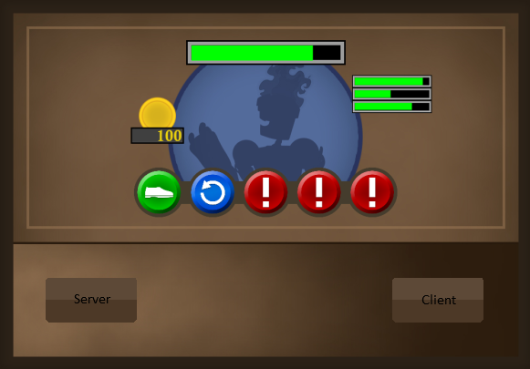
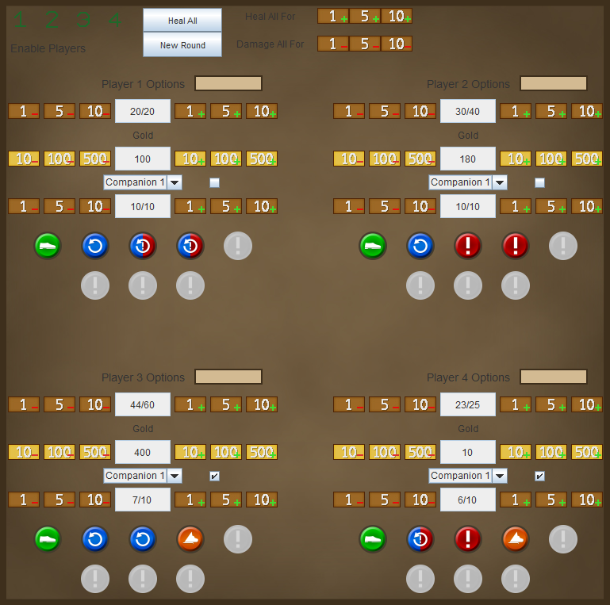
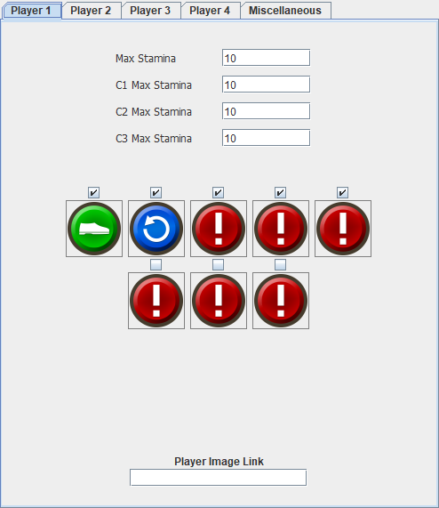
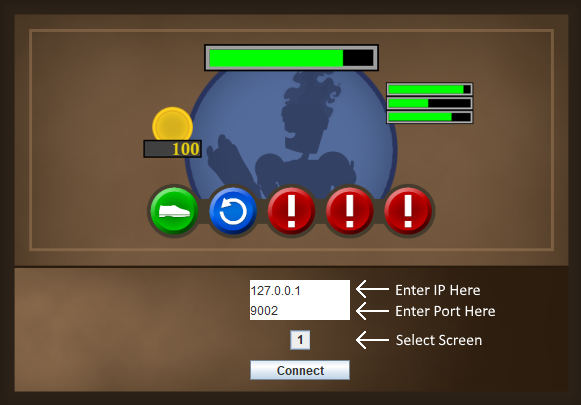
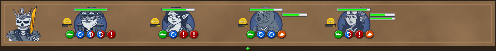

URealms Stamina Tracker
This was my first project involving networking that sparked my passion for it, and is reflective of my inexperience of the time. It was designed for private games I ran with friends, so I polished it up and released it into the small community it was made for.
It was written in Java, using the Swing GUI framework. Clients connect to one Server from which information is transported through command strings. As it was developed without much planning, there are many things I have learnt from it including what not to do. In particular, the program was written before I had a solid grasp on Object-Oriented design, and makes use of reflection where it definitely should not.
Setup
The program is simplified for general use, made so that Clients have to do no more work than just connecting to a Server, as the person hosting it will have all the resources needed for the game. The host needs to setup Port-Forwarding for port 9002 before selecting Server.
Server
The Server control panel displays all the necessary information and controls in a simple and digestible layout. It is broken down into 6 main sections; bulk actions at the top, 4 individual player sections spread across, and a config popout window. All controls are labelled, and each player has an editable text box next to their controls to give extra help to the host. Player companions are cycled through using another combobox.
The config panel is used to hide away some settings that are usually only changed once or twice before use. This involves setting maximum health values and action type/availability.
In hindsight, I think information is presented well (although some colours are poorly chosen) and most importantly easy to use on the fly, as the host will be juggling several tasks at once. There definitely is room for improvement, for example companions should be dynamically added rather than confining a hard limit of 3 to one set of buttons and a combobox.
Client
The purpose of the client is to be a quick an pretty way for the Players and Audience to check on their stats, as opposed to having to constantly ask each person, interrupting the flow of the game. Upon clicking Client, IP & Port fields are displayed as well as a combobox to select the monitor it will be shown on. Once the Client connects, nothing else has to be done by the Player.
The client sits on top of the selected screen above the Taskbar and displays the information recieved from the Server with nice visuals. The portraits selected by the Server are also synced up, although the images are scaled to fixed dimensions which can cause some warping of they are not the same ratio.
Download
The program is available on my GitHub, where you can view the source code or download the compiled jar through the buttons below.
Download Source